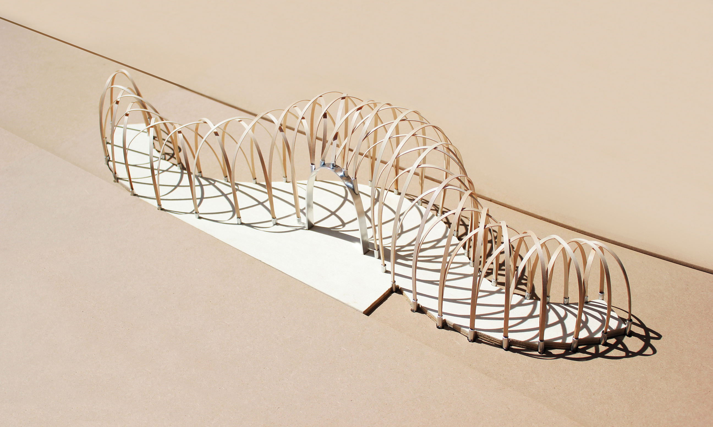
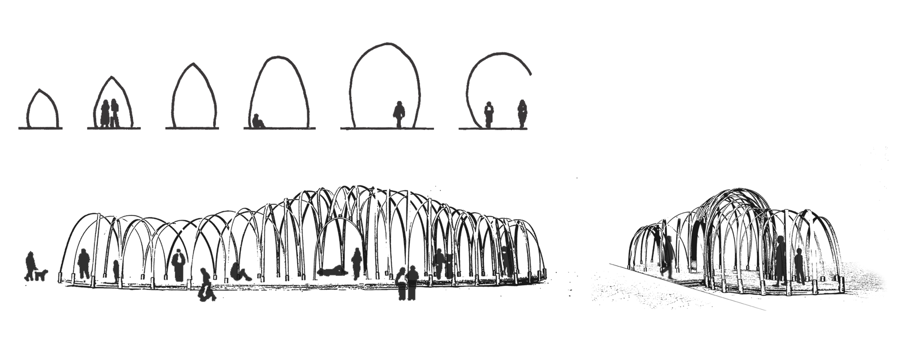
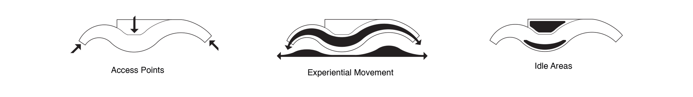
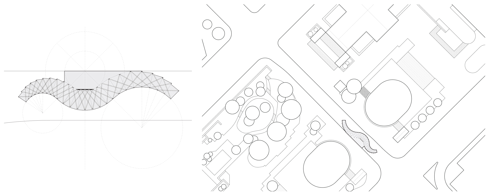

Robson Redux
Robson Redux aims at briefly transforming Robson Street, the heart of downtown Vancouver into an enjoyable pedestrian plaza and integrating it with the Robson Square complex and its civic institutions. The theme of the competition is people’s connection to one another. Made with simple construction methods and a simple concept, the bending and intersecting wood create enclosed pathways allowing for movement within while narrow corridors shape themselves in a way as to force human interaction. The structure in itself also acts as visually attractive sculpture as an organic counterbalance within the ordered city of Vancouver.
   Wood Model, AutoCAD, Photoshop